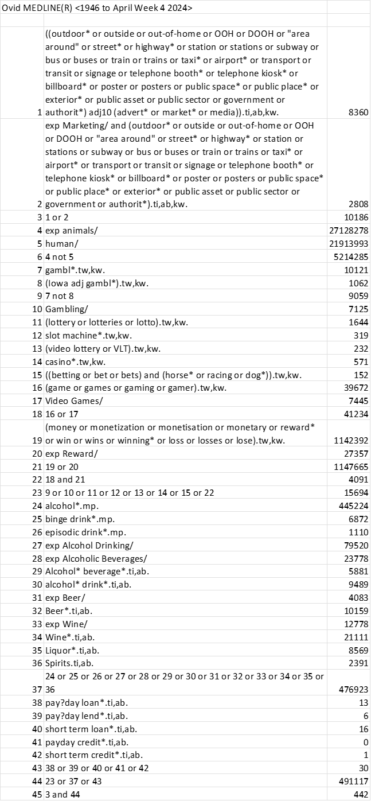
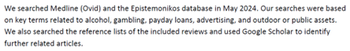

4 Searching for and selecting relevant research evidence
Finding research evidence that meets the eligibility criteria is a critical part of the RES process. This section describes a streamlined approach to identifying evidence for inclusion in a RES and provides experience-informed insights and practical tips.
4.1 Learning objectives
By the end of this section, you should:
· Understand how to develop a search strategy and how to search literature
· Understand the streamlined approach to study selection
· Understand the flexible approach to searching evidence for a RES
It is important to note that this section does not cover the know-how and hands-on skills and steps required to perform literature searches. Searching the literature effectively requires a certain level of skill and experience. Although beginners can carry out searches themselves, it is recommended to seek guidance and support from experienced librarians where possible. Those interested in learning systematic literature search methods are advised to refer to other resources, for example,
· Chapter 4: Searching for and selecting studies, in the Cochrane Handbook for Systematic Reviews of Interventions.
· Video Tutorials of searching the commonly used databases
4.2 Performing and reporting a search
RES aims to quickly mobilise relevant evidence for decision-makers on specific health and care innovations. With this in mind, we aim to identify the most relevant, recent and highest quality evidence rather than conducting exhaustive searches for all potentially related evidence.
4.2.1 Constructing a suitable search strategy
Before performing a database search, we need to develop a suitable search strategy. A search strategy consists of multiple search terms (i.e., keywords, terms, or phrases) related to a review question that are strategically combined – often using Boolean operators, truncations and wildcards. Figure 2 presents the search strategy that we used to find research for the RES Restricting advertising in public spaces.

To build a search strategy, we typically follow the steps outlined below.
4.2.1.1 Identify keywords
The first and vital step is identifying keywords that can be combined in a search strategy.
In identifying keywords, we often need to:
· Consider the topic(s) of the RES question(s);
· Identify the main concepts within the question(s) and list relevant keywords;
o Check whether a concept has MeSH subject headings using databases. Subject headings are standardised terms used for precisely searching literature on a specific topic.
· Refer to key search terms used in the search strategies of published evidence syntheses, usually available within appendices, supplementary materials, and/or in published review protocols.
· Use databases, Google, or Artificial Intelligence tools (e.g., litsearchR) to find other related keywords.
For example, the terms used from line 21 to line 33 in Figure 2 are all keywords relating to the main concept ‘alcohol’. We identified these terms through multiple approaches as noted above, including referring to the search terms used in a relevant Cochrane Review [15].
4.2.1.2 Use Boolean operators to combine search terms appropriately
Boolean operators are words (i.e., OR, AND, and NOT) used in search engines and databases to refine and combine search terms. They help to improve search accuracy by controlling how search terms are ‘connected’ with each other in a search.
· OR: This word is used to combine search terms, usually for the same concept, and increases the yield of the search by identifying papers where the terms appear separately or together.
· AND: This word is used to combine different concepts and reduces the yield of the search by only picking papers where the ’AND’ terms all appear (ignoring papers where only one appears).
Lines 21 to 33 in Figure 2 were combined using the Boolean operator ‘OR’ as they are all related to the concept of alcohol.
Line 42 used the Boolean operator ‘AND’ to combine advertising-related terms and those related to harmful commodities such as alcohol, gambling, and short-term loans.
4.2.1.3 Refine a search strategy
This often includes:
· Rephrasing search terms where relevant (e.g., by using truncation and wildcards.
· Using pre-defined search filters where available. In this context, a search filter is a pre-defined combination of search terms and is often validated by experts. ISSG Search Filters Resource is a collection of established search filters on various topics.
4.2.2 Consideration of appropriate resources of evidence
We prioritise summarising pre-appraised evidence in RES in the first instance, progressing to primary studies when this pre-appraised evidence is not available, limited or outdated. We primarily search the most commonly used databases, including Medline (or PubMed) and the Cochrane Library, which includes both the Cochrane Database of Systematic Reviews and the Cochrane Central Register of Controlled Trials.
When database searching results in insufficient evidence for a RES, we might consider using the following resources for additional searches:
· Epistemonikos, a database of systematic reviews in health and care fields.
· Resources other than databases, including evidence submitted by stakeholders, or the manufacturers of an intervention. We often consider NICE guidance as a valuable source of information and search for relevant guidance where applicable.
· Reference checking or forward citation searching of relevant evidence syntheses and primary studies.
Instead of fully presenting the detail of search methods used (e.g., Boolean and proximity operators used, subject headings included, text words searched, and limits and filters applied), our RES reports only contain brief and essential details about the search methods such as databases and additional resources searched, the key concepts used and dates of the searches. However, the full details of searches are available on request. Figure 3 presents an example of the Search section of the RES Restricting advertising in public spaces

4.2.3 Refining the search
When starting a new RES, we design our initial search to find evidence directly relevant to the RES questions, focusing on the specific health and care innovations and populations that the decision-makers are interested in. When the focused search returns a substantial amount of evidence that is more than we can manage for a RES, we may not perform wider searches for further evidence and indeed may narrow the eligibility criteria further based on the quality, comprehensiveness or timeliness of the evidence.
In cases where there is little or no evidence, or even outdated evidence, on the specific health and care innovations and we opt to adapt wider eligibility criteria as noted in Section 2, we expand the search for broader, more indirect evidence that does not perfectly match the specific population, innovation, context, or outcome of interest, but may still provide useful insights.
4.3 Study selection
A single reviewer normally performs study selection, although consultation with a second reviewer is often undertaken. We often the online tool Rayyan to facilitate the study selection process.
See the video to learn the key principles to consider when searching and selecting research for RES.
4.4 Section summary
We normally follow a traditional approach to constructing a search strategy, using Boolean operators to combine search terms, and using commonly used resources to search for evidence.
We often take a flexible approach to searching for evidence for a RES, beginning with a focus on direct evidence and, where necessary, expanding to search for evidence on wider, more indirect evidence.
4.5 Tasks to complete
☐ Search electronic databases and, where applicable, other resources, referring to the Development and execution of searches document
· Choose databases and other resources that you consider appropriate for searches
· Build appropriate search strategies
· Perform searches
· Download and manage search results
☐ Screen studies for inclusion against the pre-specified eligibility criteria
☐ Document literature search and selection